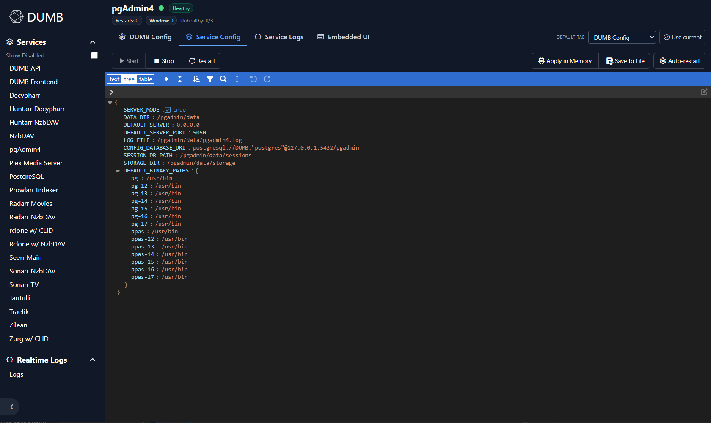
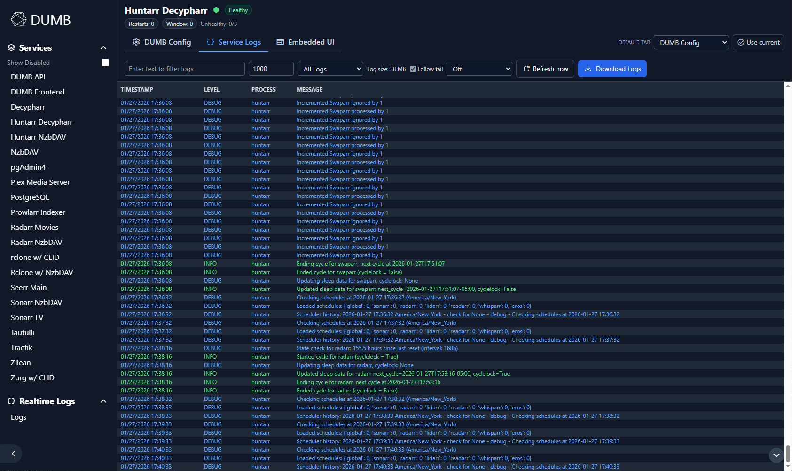

Service pages¶
This page covers the service-level controls exposed in the DUMB Frontend, including auto-restart policies, auto-update scheduling, and configuration editors.
Overview¶
Each service page includes:
- Current status, health, and restart counters
- Start, stop, and restart actions
- Configuration editors with validation
- Log viewers (service logs, plus special logs when available)
- Embedded UI tab when supported and enabled
- Per-service auto-restart overrides
Status and controls¶
The header shows the service name, status dot, and health badge. When auto-restart is enabled for a service, you also see restart counters and the last restart reason.
Action buttons:
- Start, Stop, Restart for the current service
- Auto-restart opens per-service overrides (if supported)
Auto-restart policy¶
Configure the global auto-restart behavior:
| Setting | Description |
|---|---|
| Enabled | Auto-restart failed services |
| Max Restarts | Maximum restart attempts |
| Cooldown | Time between restart attempts |
| Grace Period | Wait time before health checks |

Service overrides¶
Service pages can also override auto-restart settings per service:
- Enable/disable auto-restart for the current service
- Override defaults (intervals, thresholds, backoff)
- Apply in memory or save to file
Auto-update settings¶
Configure automatic service updates:
| Setting | Description |
|---|---|
| Enabled | Check for updates automatically |
| Interval | Hours between update checks |
| Clear on Update | Remove old files when updating |
Configuration editors¶
The frontend includes editors for the main DUMB config and service-specific configs.
Edit DUMB Config¶
View or edit dumb_config.json. Changes can be saved in memory or written to disk.
Notes:
- The editor runs schema validation when available.
- Invalid JSON or validation errors block saves until corrected.
Edit Service Config¶

For services with separate config files, you can open and modify those settings here. Service configs should be saved to file.
Logs¶
Service pages include log viewers when a log file is configured or when the service is allowlisted for logs:

- Filter by text and level
- Limit displayed lines
- Follow tail and refresh on an interval (including custom intervals)
- Manual refresh
- Download logs
Special log tabs¶
- Traefik Access Logs appear on the Traefik service page.
- DBRepair Logs appear on the Plex service page when DBRepair is enabled.
Embedded UI¶
When embedded UIs are enabled and the service exposes a UI, a dedicated Embedded UI tab appears.
Features:
- Open in new tab (only shown for local/private access)
- Full window toggle
- UI path selector for services with multiple entry points (for example Zilean)
NzbDAV uses a trailing slash in its embedded UI path to match its frontend routing.
Default tab selection¶
You can choose a default tab for each service page (for example, always open logs). The selection is stored in the UI preferences.